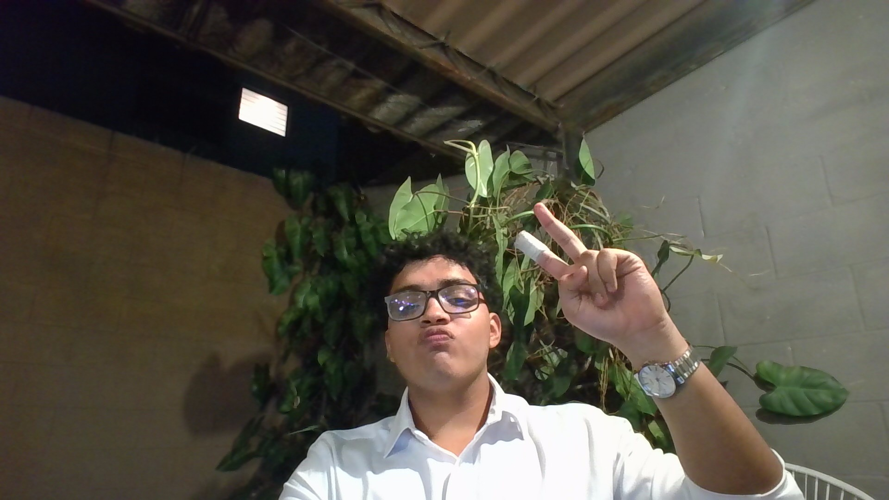
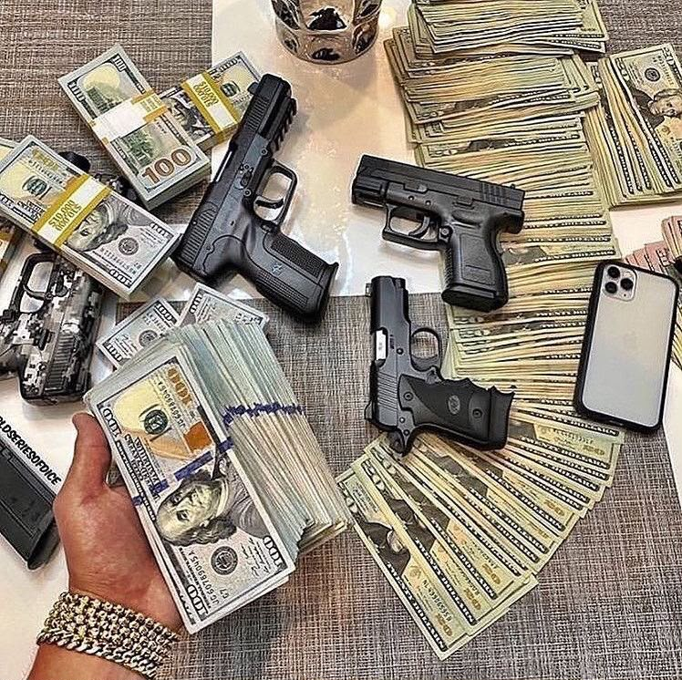

Sobre mí

Soy Andres, estudio Ingeniería de Software y Negocios Digitales en la Escuela Superior de Economía y Negocios y ahorita estoy tratando de crecer y forjar lo mio. Me gusta entender cómo funcionan las cosas y sacarles provecho, desde una página sencilla hasta cosas de la vida cotidiana.
Me gusta entrenar y estar en movimiento. Yo creo que la disciplina que uno agarra en cualquier cosa se nota en todo lo demás, ahorita estoy empezando despues de un tiempo inactivo para hacer un cambio 360.
Que me motiva
Estas son las cosas que quiero lograr en los próximos años. Algunas ya las estoy trabajando y otras todavía son puras ganas, pero ahí van.
